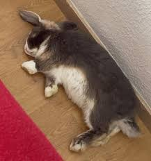

tabbytha thhe cat


Meet Serena
Serena is a soft, gentle European bunny with big ears and an even bigger heart. She’s calm, quiet, and loves to take it easy.
Her favorite things are munching on hay, stretching out in cozy spots, and exploring her space at her own pace. Serena isn’t super active, but she’s curious and likes to sniff around and check things out.
She’s not the cuddliest at first, but once she feels safe, she enjoys gentle pets and being near her favorite people. A calm, quiet home would be perfect for her.
If you’re looking for a sweet, low-key bunny friend, Serena might be just the one for you!